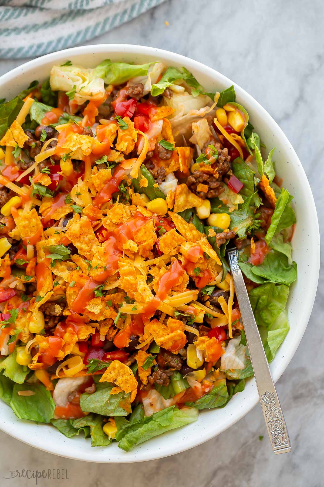

Dorito Salad

Description
This Dorito Taco Salad is the perfect quick and easy, veggie-packed dinner! It's made with a fresh, crisp romaine, topped with ground beef, black beans, tomatoes, corn, and shredded cheese, then finished off with nacho Doritos and home-made salsa!
Ingredients
- Ground Beef
- Black Beans
- Taco Seasoning
- Diced Tomatoes
- Romain Lettuce
- Corn
- Cheese
- Homemade Salsa
- Doritos
Steps
- Cook the beef: In a large skillet over medium heat, cook the beef until browned. Drain the grease or use paper towels to mop up the greae right in the pan.
- Add in the beans and taco seasoning. Cook and stir until combined
- Prep the veggies: Cut the tomato and squeeze out excess liquid, then combine lettuce, tomato, corn, and cheese in a large bowl.
- Combine and serve: Top the veggie mixture with the beef/beans, then stir in dressing. Right before you're ready to serve, top with Doritos!